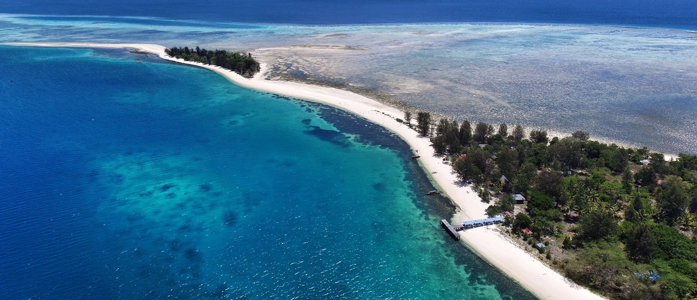
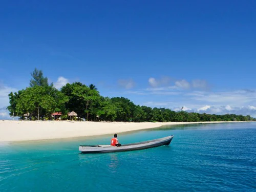
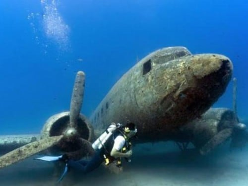
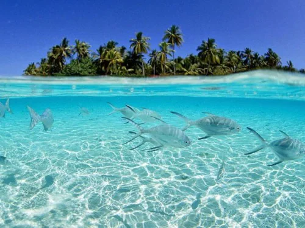
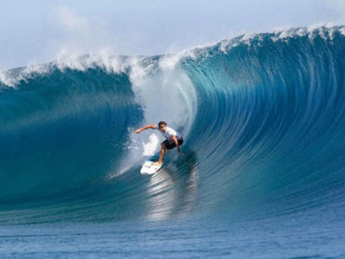

THE ISLAND OF MOROTAI

Locals who still remember World War II would tell visitors that back in 1944-145 Morotai was a hive of military activities with tens of sorties roaring daily from aircrafts taking off and landing at airstrips along Daruba Bay,endless stamping of thousands of military boots marching across the island, and navy ships anchoring daily carrying supplies and reinforcement. For Morotai back then, was the strategic base of the Allied Forces from which they attacked posts in the Philippines and Borneo in their fight against Japanese forces during World War II.

On 15 September 1944, Allied Forces from the USA and Australia under leadership of Supreme
Commander for the West Pacific, General Douglas MacArthur, landed on Morotai’s south west
corner, where some time before, the Japanese had constructed an airstrip but abandoned it
in favor of the island of Halmahera to its south. In Morotai the Japanese command left
only some 500 soldiers to guard the island. With such overwhelming odds, the advancing
Allied Forces were no match for the small number of Japanese troops. The Japanese Navy
later tried to recapture the island but also to no avail.
When the Japanese abandoned Morotai, Gen. MacArthur saw this as the golden window of opportunity
to take the island which he considered was at the most strategic location for a counter invasion
to recapture the Philipppines from the Japanese. With over 50,000 troops the Allied Forces
settled on Morotai. Losing no time, Mac Arthur immediately constructed a number of airstrips
over the rough coral ground. At one point, Morotai was said to house no less than 60,000
soliders, and had a large hospital with 1,900 beds. There was also a busy naval base nearby.

Later, Australian Forces also sortied from Morotai to stage attacks on North Borneo. This hive
of activities continued until the end of World War II at the surrender of the Japanese in 1945.
Before leaving the island, Allied Forces are said to have burnt down all constructions on Morotai.
In 1974 a lone Japanese soldier called Taruo Nakamura emerged from the jungles of Morotai having
hidden there for decades unaware that the War was long over.
Today, Morotai has become a vague memory in the annals of World War II military operations in the Pacific
Theater, and its role in the fight for freedom of the Philippines almost forgotten.
The island itself with a total population of 53,000 people is now back to its routine as sleepy tropical paradise.
Nevertheless, its decisive role in World War II is forever etched in history books.

Now the government plans to make Morotai into an economic hub and gateway into Indonesia from the Pacific Ocean.
Morotai will be developed as a fishery, tourist, trade and services center.
The island of Morotai has now been designated as one of Indonesia’s Top Priority Tourist Destination for intense
resort development.
Where in the world is Morotai
Located north of the larger island of halmahera in the province of North Maluku, the island of Morotai has a number of great beaches and interesting diving spots. The largest town here is Daruba in the south. To Morotai’s north are the Philippines, to its east the Pacific Ocean. Not much remains to be seen from those hectic World War II days, except for a number of interesting wrecks to be explored underwater.

A lone statue of General Douglas MacArthur on the island of SumSum near Daruba serves to remind
following generations that this famous general, best known for his words “I will return”,
once made Morotai his military base.
Nearby at Kao Bay in Halmahera a half submerged Japanese wreck named the Tosimaru can still be seen from shore.
A shack filled with memorabilia of World War II collected by a private citizen and known as the Morotai Museum
can be visited to remind visitors of those terrible war days, which will hopefully never occur again on this planet.
Besides serving as US and Australian military base in WW II, the island of Morotai later also served as base
for Indonesian forces in the liberation of West New Guinea from Dutch colonization.
Get There
The best way to get to Morotai is on your own yacht or liveaboard, which will ensure your easy
access and accommodation.
The nearest airport to Morotai is on the island of Ternate. Garuda Indonesia, Lion Air, and Sriwijaya Air serve
regular flights to Ternate. From here you must travel overland to Tobelo, in North Halmahera, then take a ferry
to Daruba on Morotai. The sea journey takes around two hours.